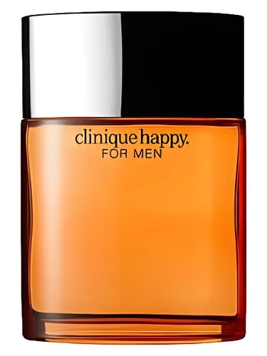

Clinique Happy
- Para hombre
- Familia cítrica
- Lanzado en 1999
$1,499
Precio de referencia. Te confirmamos el precio final y la presentación por WhatsApp antes de enviar.
Por encargo: lo conseguimos para ti
Cómo huele
Cítrico
Verde
Aromático
Marino
Amaderado
Sus notas
Salida
naranja mandarinalimanotas marinaslimónnotas verdes
Corazón
fresiajazmínlirio de los vallesrosa
Fondo
ciprésalmizclecedroguayaco
Clinique Happy de Clinique es un perfume cítrico para hombre, lanzado en 1999. Abre con naranja mandarina y lima, en el corazón tiene fresia y jazmín y deja un fondo de ciprés y almizcle. Lo que más se siente: cítrico, verde y aromático.